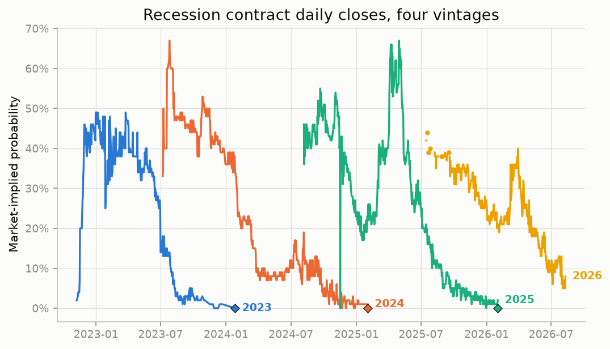
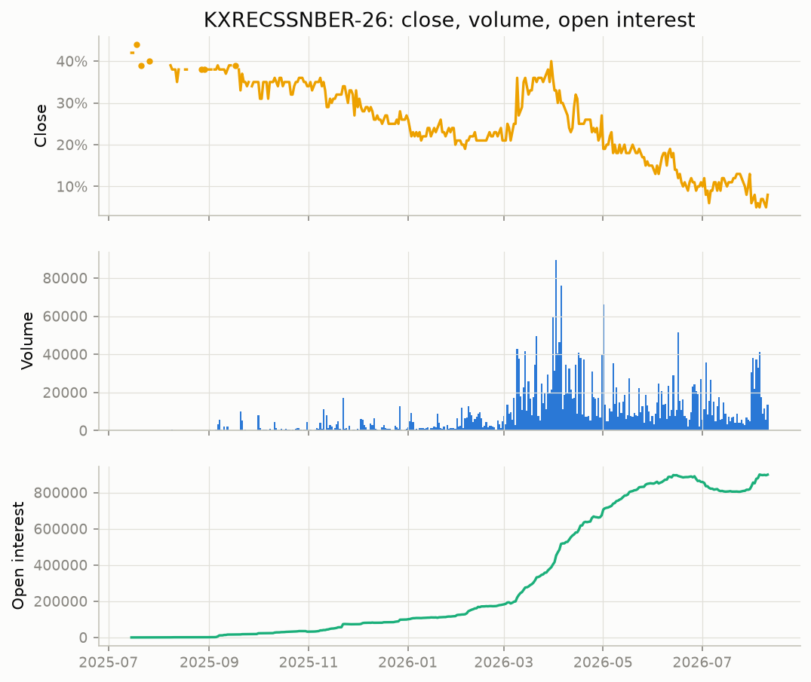
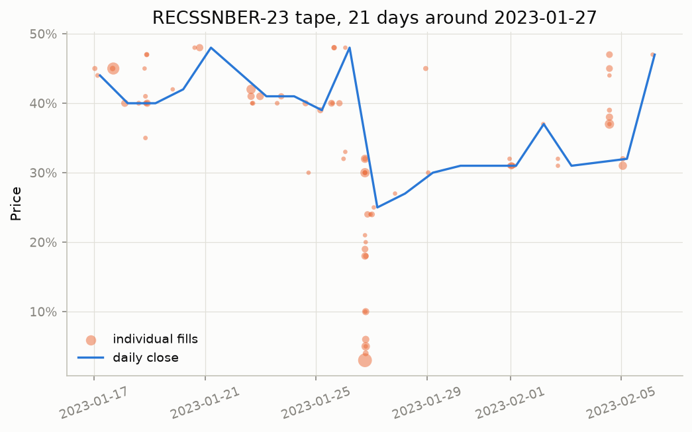
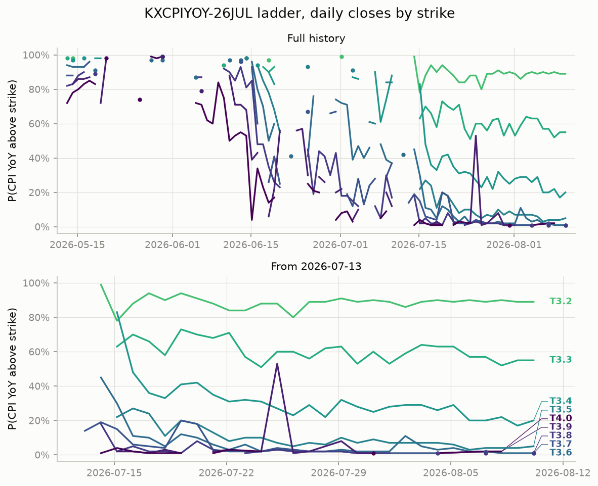
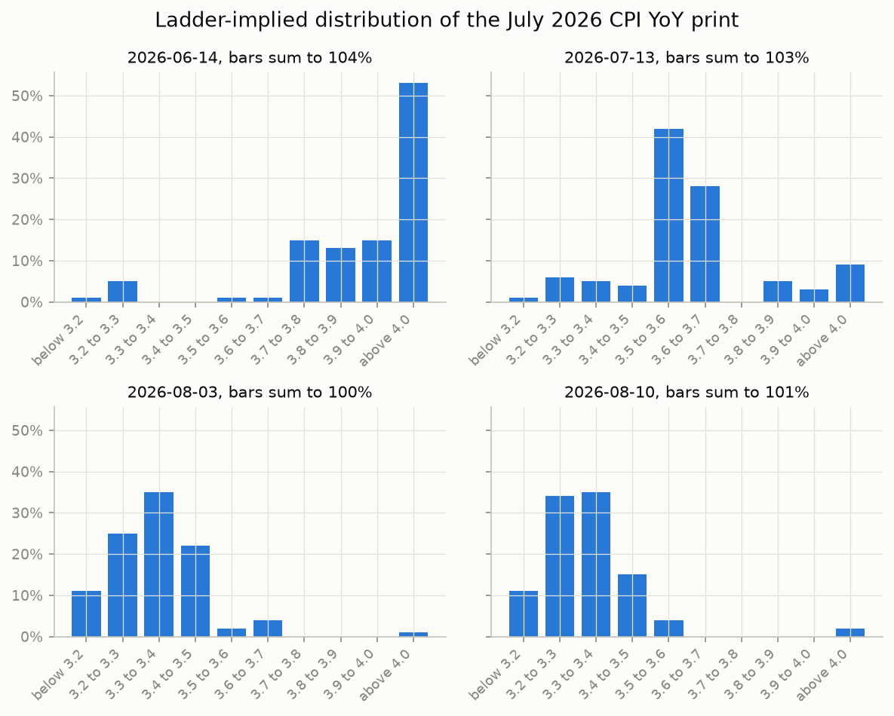
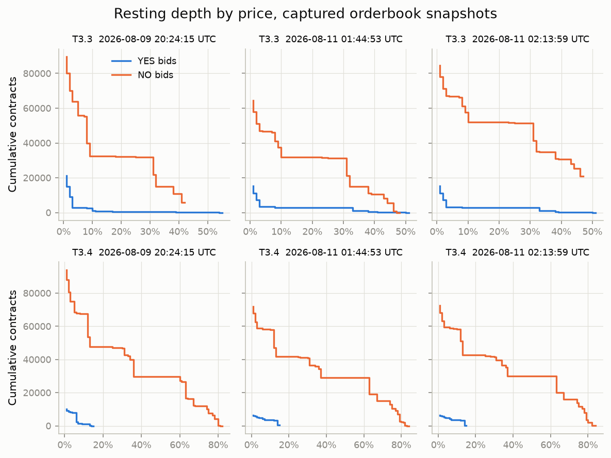

Kalshi_Pull is an open source Python library for collecting market data from Kalshi, an exchange where contracts trade on real-world events. Each contract settles at one dollar if the event happens and zero if it does not, so a price reads directly as a market-implied probability.
The library collects three kinds of data: price history at daily, hourly, and minute frequency, every individual trade, and snapshots of the order book. It runs on a single ticker, a whole series, or the full committed catalog, and it can poll live markets on a schedule. The repository holds the library, the command line pullers, the live poller, the discovery scripts, and the ticker catalog.
Output is written to disk in one consistent layout, organized by data type, series, and date. Pulls resume from the last stored row and drop duplicates on write, so a store can be topped up on any schedule without gaps or repeats.
The committed catalog covers 15 macro series, 524 events, and 4,065 unique tickers, measured from all_tickers.json in the repository. Discovery rebuilds the catalog for any series on the exchange.
| Category | Series |
|---|---|
| Inflation | KXCPI, KXCPIYOY, KXACPI, KXCPICORE, KXPCECORE, KXCPICOREYOY |
| Labor | KXU3, KXJOBLESS, KXPAYROLLS |
| Growth | KXGDP, KXGDPYEAR, KXRECSSNBER |
| Fed | KXFEDDECISION, KXFED, KXFEDMEET |
Live polling runs over a hand-verified focus universe of 37 active tickers, pulling minute candles, trades, and order book snapshots on separate cadences.
The exchange is the hard part. Kalshi splits its data across live and historical endpoints that name the same fields differently, serializes numbers as text, and drops settled markets off the live side. The library absorbs each of these, so settled and active markets read identically in the output.
| What the exchange does | What the library does |
|---|---|
| Live and historical endpoints name the same candle differently, price.close_dollars and volume_fp against price.close and volume | Normalizes both response shapes into one schema |
| Settled markets return 404 from the live endpoints | Catches the 404 and switches to the historical endpoint mid-run |
| Event and market lookups fail on older contracts | Resolves through up to four endpoint tiers before giving up |
| Prices, volumes, and counts arrive as decimal strings | Casts every numeric field to float64 |
| Contract counts carry two decimal places | Passes fractional fills through unscaled |
| A request spanning more than 5,000 candles is rejected | Sizes every request window under the cap, so a three day minute window is 4,320 bars |
| Older tickers lack the KX prefix that newer ones carry | Queries both spellings during discovery |
| Some tickers cannot be resolved at all | Logs them to a skip file and continues the run |
Three schemas cover everything the library writes.
| Data | Written to | Columns |
|---|---|---|
| Candles, daily, hourly, and minute | candles/{frequency}/{series}/ | ts_ms, open, high, low, close, mean, volume, open_interest, market_ticker, event_ticker, series_ticker |
| Trades | trades/{series}/{ticker}/{yyyy-mm} | trade_id, market_ticker, ts_ms, yes_price, no_price, count, taker_side |
| Order book snapshots | orderbook/{ticker}/{yyyy-mm-dd} | ts_ms, market_ticker, side, price, quantity, cumulative_qty, distance_from_top |
Nine offline tests cover candle normalization, trade normalization, and the Parquet append round trip. They run against synthetic fixtures, with no credentials and no network.
The examples below show data the library collected, plotted and tabulated exactly as stored. Nothing is smoothed, filled in, or interpreted.
Both run on frozen copies of the output, collected 2026-08-09 through 2026-08-11 UTC and checked against MD5 manifests. Prices are stated as market-implied probabilities, which is what the exchange trades. The case workspace stays local.
Four annual recession markets were pulled end to end: RECSSNBER-23, RECSSNBER-24, RECSSNBER-25, and KXRECSSNBER-26. The pull holds 1,678 daily candles across the four vintages, 8,890 hourly candles for the 2026 vintage, and 48,154 individual fills across the four tapes. Metadata recorded that the 2023, 2024, and 2025 vintages settled at no with value 0.0, and that the 2026 vintage remains active.

Daily closes for four annual US recession markets, 2023 through 2026, each price read directly as a market-implied probability. Diamonds mark the three settled vintages at 0.0; the 2026 vintage still trades. Isolated closes render as dots, including the 2026 peak of 0.44 on 2025-07-18.

KXRECSSNBER-26 in three panels on one calendar axis: daily close, daily volume, and open interest, from the first candle on 2025-07-15 through 2026-08-10. Gaps are stored NaN closes. Open interest plots unscaled as the API reports it, peaking at 899,468.34 contracts.

The RECSSNBER-23 trade tape over the 21 days around 2023-01-27: 77 individual fills as dots sized by contract count, under the daily close line. The day was picked by rule, not by eye: volume at or above the vintage median, then the largest one-day close change. The fills show the intraday path the daily candles compress, down to 0.03 on 2023-01-26.
| Metric | RECSSNBER-23 | RECSSNBER-24 | RECSSNBER-25 | KXRECSSNBER-26 |
|---|---|---|---|---|
| Date range | 2022-11-08 to 2024-01-26 | 2023-07-07 to 2025-02-01 | 2024-08-06 to 2026-02-01 | 2025-07-15 to 2026-08-10 |
| First close | 0.02 | 0.33 | 0.46 | 0.42 |
| Peak close, date | 0.49 on 2022-12-31 | 0.67 on 2023-07-26 | 0.67 on 2025-04-30 | 0.44 on 2025-07-18 |
| Final close | 0.00 | 0.01 | 0.02 | 0.08 |
| Settlement | no, 0.0 | no, 0.0 | no, 0.0 | pending |
| Total volume | 77,762.00 | 603,186.00 | 4,781,411.00 | 3,220,135.60 |
| Peak open interest | 22,411.00 | 105,588.00 | 665,359.00 | 899,468.34 |
| Rows with numeric close | 273 | 486 | 527 | 355 |
| NaN close rows | 0 | 0 | 0 | 37 |
| Missing calendar days | 172 | 90 | 18 | 0 |
| Largest one-day repricing | -0.23 on 2023-01-27, volume 1,632.00 | +0.20 on 2023-07-19, volume 10.00 | -0.43 on 2024-11-16, volume 0.00 | +0.11 on 2026-03-09, volume 42,847.00 |
Computed from the frozen Case 1 data by the case metrics script.
The RECSSNBER-23 peak close of 0.49 ties across 7 dates, 2022-12-31 through 2023-03-25, and the table reports the first.
The RECSSNBER-25 raw repricing entry is a documented zero-volume artifact. Excluding that date, its largest one-day repricing is -0.12 on 2025-04-10, volume 142,073.00.
| Snapshot date | Close date used | Close | Percent |
|---|---|---|---|
| 2025-08-15 | 2025-08-13 | 0.38 | 38% |
| 2026-02-02 | 2026-02-02 | 0.21 | 21% |
| Latest in frozen data | 2026-08-10 | 0.08 | 8% |
Last available close on or before each snapshot date, from the frozen daily Parquet.
Kalshi lists one contract per threshold, so the July 2026 CPI event holds nine markets at strikes from 3.2 to 4.0 percent. All nine were pulled before the 2026-08-12 release, as a pre-event example. The pull holds 708 daily candles, 9,813 hourly candles, 53,250 minute candles, 12,460 fills, and 742 order book rows from three sweeps of the ladder.

Daily closes for all nine KXCPIYOY-26JUL strikes in two panels: the full event life from 2026-05-13 on top, and the liquid window from 2026-07-13 below, labelled at each line's final value. Strikes run light green at T3.2 through dark purple at T4.0. Lines break at stored NaN closes, and isolated closes render as dots.

Bucket probabilities for the July 2026 CPI YoY print at four snapshot dates, from adjacent-strike differences in daily closes. These are risk-neutral market prices, not a forecast of the print. Negative buckets from stale quotes are clipped at zero, so three panels sum above 100 percent by the inversion sizes shown in the monotonicity table.

Cumulative resting depth by price for the YES and NO bid books of T3.3 and T3.4, the two most liquid strikes by stored book rows. Each panel is one captured snapshot, titled with its capture time. The three sweeps ran on 2026-08-09 and 2026-08-11, each walking the nine strikes in about one second.
| Metric | T3.2 | T3.3 | T3.4 | T3.5 | T3.6 | T3.7 | T3.8 | T3.9 | T4.0 |
|---|---|---|---|---|---|---|---|---|---|
| Latest close, date | 0.89 on 2026-08-10 | 0.55 on 2026-08-10 | 0.20 on 2026-08-10 | 0.05 on 2026-08-10 | 0.01 on 2026-08-10 | 0.01 on 2026-08-10 | 0.01 on 2026-08-10 | 0.02 on 2026-08-08 | 0.02 on 2026-08-08 |
| Total volume | 58,997.07 | 166,575.51 | 178,014.41 | 135,678.95 | 96,383.61 | 55,217.04 | 39,180.91 | 18,873.65 | 21,276.83 |
| Minute bars | 5,678 | 13,466 | 15,711 | 7,269 | 4,113 | 3,249 | 1,978 | 1,014 | 772 |
| Trades | 1,823 | 2,940 | 2,960 | 2,102 | 937 | 481 | 579 | 265 | 373 |
| Fractional-fill share | 63.4% | 49.0% | 48.0% | 45.9% | 12.9% | 18.7% | 5.0% | 10.2% | 14.2% |
| Close at 2026-06-14 | 0.99 | 0.94 | 0.98 | 0.98 | 0.97 | 0.96 | 0.81 | 0.68 | 0.53 |
| Close at 2026-07-13 | 0.99 | 0.93 | 0.88 | 0.84 | 0.42 | 0.14 | 0.17 | 0.12 | 0.09 |
| Close at 2026-08-03 | 0.89 | 0.64 | 0.29 | 0.07 | 0.05 | 0.01 | 0.01 | 0.01 | 0.01 |
| Close at 2026-08-10 | 0.89 | 0.55 | 0.20 | 0.05 | 0.01 | 0.01 | 0.01 | 0.02 | 0.02 |
Computed from the frozen Case 2 data by the case metrics script.
| Snapshot | Pair | Lower strike close | Higher strike close | Inversion size | Against tolerance |
|---|---|---|---|---|---|
| 2026-06-14 | T3.3 and T3.4 | 0.94 | 0.98 | 0.04 | exceeds |
| 2026-07-13 | T3.7 and T3.8 | 0.14 | 0.17 | 0.03 | exceeds |
| 2026-08-03 | none | ||||
| 2026-08-10 | T3.8 and T3.9 | 0.01 | 0.02 | 0.01 | within |
Every adjacent-strike inversion across the four snapshots, tolerance 0.02.